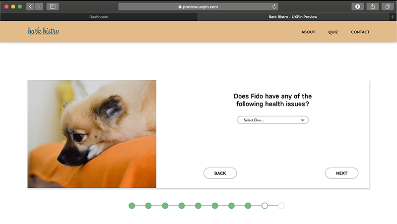
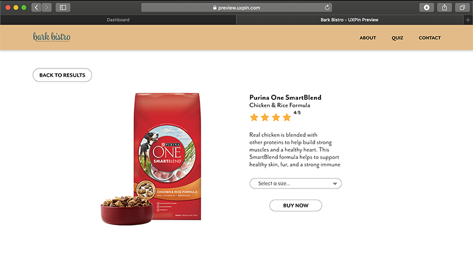
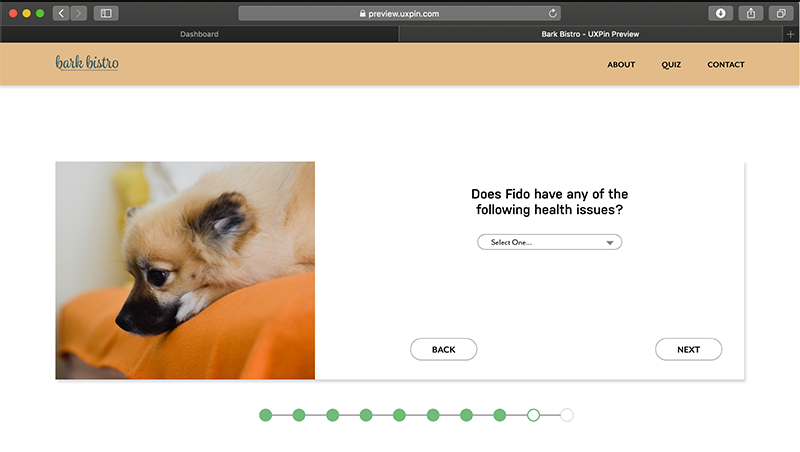
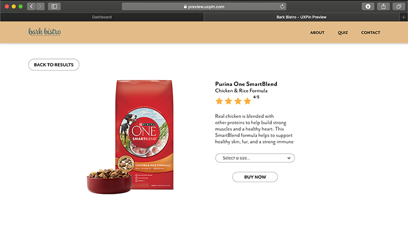

UI/UX
The Process
This is a group project create in our intro to web class. We created a recommendation engine called “Bark Bistro” to recommend what kind of dog food your dog should eat based on their personal qualities. We wanted to keep it fun and easy to navigate for busy people who just don’t know what to pick out at the store and need help to find what would be best for their dog. I mainly focused on the layout of the website and the interactions while my partner worked on the mobile version. Collectively we each took half of the photos. After figuring out our demographic and personas, we started working on the layout of the pages. We created a flow chart like the ones shown to map out exactly how we wanted the pages to flow based on the answers given.


 


